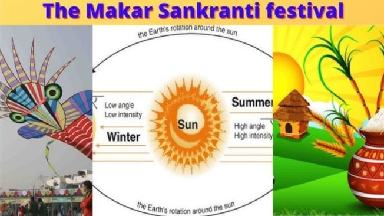

HAPPY SANKRANTHI
Sankranti, a significant Hindu festival, holds cultural and astronomical significance. Derived from the Sanskrit words "sam" (together) and "kranti" (movement), Sankranti marks the sun's transition into the zodiac sign of Capricorn. This celestial event, occurring around January, symbolizes the end of winter solstice and the commencement of longer days.

The festivities associated with Makar Sankranti are known by various names including Makara Sankranti in Kerala, Magh Bihu in Assam, Maghi Saaji in Himachal Pradesh, Maghi Sangrand in Punjab, Maghi Sangrand or Uttarain (Uttarayana) in Jammu, Sakrat in Haryana, Sakraat in Rajasthan, Sukarat in central India, Pongal in Tamil Nadu, Uttarayana in Gujarat and Uttar Pradesh, Ghughuti in Uttarakhand, Dahi Chura in Bihar, Makar Sankranti in Odisha, Karnataka, Maharashtra, Goa, West Bengal (also called Poush Sankranti or Mokor Sonkranti), Uttar Pradesh (also called Khichidi Sankranti), Uttarakhand (also called Uttarayani) or as simply, Sankranthi or Peddha Panduga in Andhra Pradesh and Telangana, Maghe Sankranti (Nepal), Songkran (Thailand), Thingyan (Myanmar), Mohan Songkran (Cambodia), Til Sakraat in Mithila, and Shishur Senkrath (Kashmir). On Makar Sankranti, Surya (Hindu solar deity) is worshipped along with Vishnu and goddess Lakshmi throughout India.
Pedha panduga in AP
click here